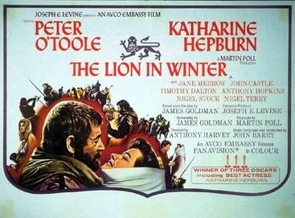

The Lion in Winter
Studio: Embassy Pictures
Starring: Peter O'Toole, Katharine Hepburn, Anthony Hopkins
Director: Anthony Harvey
Writer: James Goldman
Producer: Martin Poll
The Lion in Winter is a 1968 historical drama film centred on Henry II of England and his attempt to establish a line of succession during a family gathering at Christmas in 1183. His efforts unleash both political and personal turmoil involving himself, his estranged wife Eleanor of Aquitaine, their three surviving sons, the French king Philip II, and Philip's half-sister Alais, who is Henry's mistress.
Trivia
- Won the Academy Award for Best Actress.
- Won the Academy Award for Best Writing, Adapted Screenplay.
- Won the Academy Award for Best Original Score, no Musical.
- Selected for the National Board of Review: Top Ten Films.
- Also nominated for: Academy Award for Best Picture; Academy Award for Best Actor; Academy Award for Best Director; Academy Award for Best Costume Design.
- The original stage production had not been a success, getting a bad review in The New York Times and losing $150,000.
- Producer Martin Poll optioned Goldman's novel Waldorf for the movies.
- Poll was meant to make a film with Joseph Levine and Peter O'Toole, The Ski Bum (which would be written by James Goldman's brother William).
Filming Locations
- Wales
- The film was shot at Ardmore Studios in Bray, County Wicklow, Ireland, and on location in Ireland, Wales (Marloes Sands), and France at Abbaye de Montmajour, Arles; Château de Tarascon, Carcassonne; and Saône-et-Loire.
Previous Showings
1 Run • 1 Festival
All runs on record (1):
- June 13 - 14, 2007Katharine Hepburnw/ Guess Who's Coming to Dinner